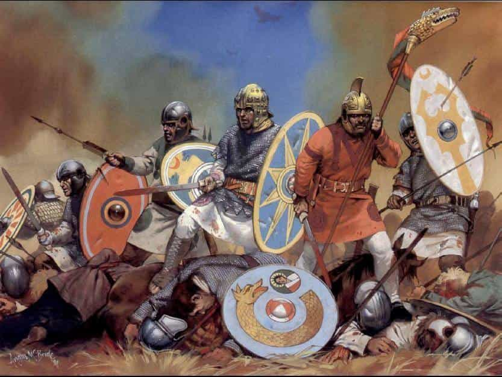
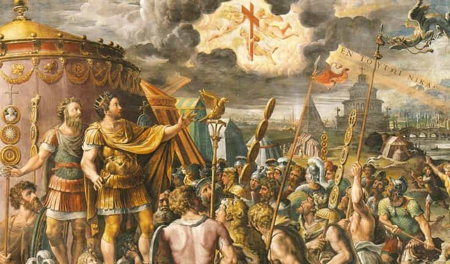
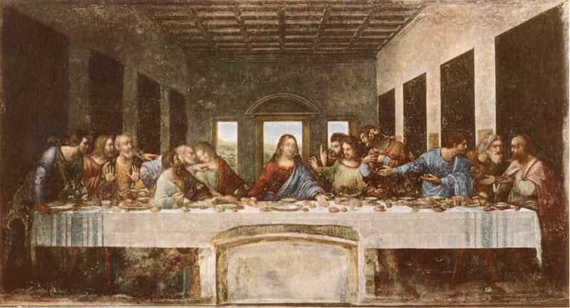
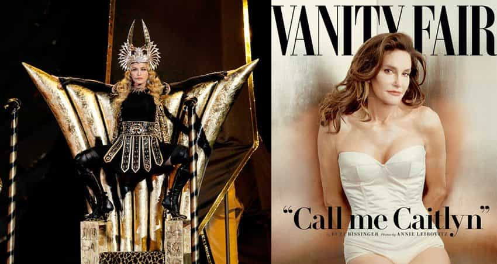
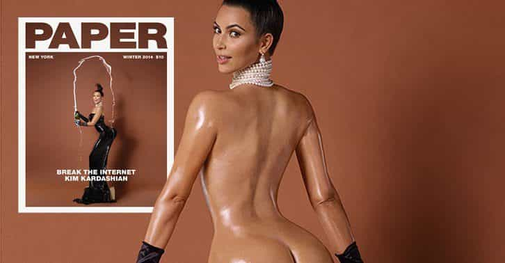
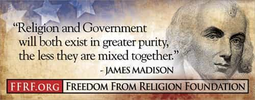
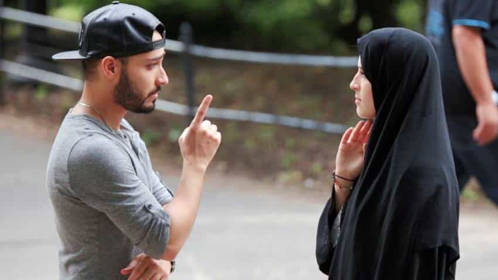

< < < Back
Barbarian Christians: Why Islam May Want To Rethink Taking Over Europe – Return Of Kings
The main crisis of The West today is one of identity. I watched a good video series on this dilemma recently and the thrust of the argument presented was this – “race” (i.e. white/European) is no basis for identity that unifies. What matters is values, morals and world view. This is what makes a tribe a tribe and binds men together in it. Christianity was the world view that once bound all of Europe’s tribes in common, but it was not always this way. Before Christ there was Rome, an empire whose collapse was caused by a very different barbarian invasion.
The funny thing I learned watching this History series, and never really thought about or made the connection before, was that the barbarians that destroyed Rome… were us!

Europeans – destroying arrogant and hypocritical empires since the dawn of Man.
The Western Roman empire collapsed because of its inability to properly assimilate the “barbarian” Germans, Brits, Celts and other conquered tribes of western Europe. Of note as well is that these barbarians were 100% pagan; a world view getting increasing interest and research within the ROK community as a possible solution to problems The West faces today.
For all their faults, Romans were the civilized peoples of the age because they were staunch patriarchal pagans, far more so than Greece ever was. In the end, Rome was overrun and destroyed by violent and unrelenting goddess worshiping warriors. A sweeping generalization of the times and its peoples to be sure, but one I feel will stand up with research and honest appraisal of the anthropological evidence. (See the Druids in pre-Roman Britain.)
I start with this short historical introduction in order to explain why Christianity appealed to the barbarian, that is the European, mind and how its adoption transformed Europe into the powerhouse it eventually became.
For the 2nd time in history, Western Europe finds itself beset by outside barbarians from a completely foreign culture and on the verge of collapse. Like Rome, very few men in The West have any interest in saving it because “the empire” simply no longer works for them. The difference is back then, Christianity was a new cult, just one of many possible answers to metaphysical questions on the nature of the universe and Man. Today, Christianity is 2000 years old and the current Catholic Pope made a historic first in allowing prayer readings from the Quran.

Where faith, politics and cultural change meet, a new radical destiny undreamed of before is born.
Christianity won in Europe when Constantine chose it in the dying days of the Western Roman empire to unify his subjects. By all accounts, it was as much a choice of true belief and conviction as of politics. The choice of Christianity would not have won over the masses however if it did not offer something of value; something true to believe in that made better sense to a pagan, and patriarchal, tribal/Roman mind. I believe this is precisely what Red Pill men are doing right now. Paganism, Neomasculinity, MGTOW, all of these are belief systems based on logic and intelligence that provide answers. Answers to a quest for a worldview that is true, that works and, most importantly, binds men in common with one another to make a unified tribe, an identity.
The failure of the Western Roman empire and why it collapsed forms the first lengthy chapters of St. Augustine’s City of God. In short, the pagan view of the world made no sense. If worshiping and sacrificing to “the gods” was what supported and gave power to Rome, why did these same gods not intervene to save Rome when it was collapsing? Augustine’s answer is a brilliant philosophical refutation of the fundamental beliefs about the pagan view of the world.
- Many competing gods/truths
- High gods have great esteem (Zeus), but no practical power (Hestia seemed to rule all.)
- The gods are highly immoral and behave in ways no self respecting person would want to behave, yet we are told to hold these characters in high esteem and worship/venerate them
- With so many goddesses and gods, how can one know which is the right one to pray to and to what end. What if you are wrong?!?!?
- The gods/goddesses also seem to not care at all about the fate of humans and in fact, do all they can to bring strife and conflict upon them, not peace and harmony
These and many other reasons Augustine outlines as the faults, and thus the lies and falsehoods, of pagan religious belief. Christianity, on the other hand, offered:
- One true God, the only power/creator over Man and his world
- Salvation in heaven (an escape from the suffering of life) with righteous living and worship to the true, and thus operative/effective, God
- A moral code that enshrined the family, Man (patriarchy) and belief in one absolute truth (paganism = relativism)

With Christ made as a living incarnation of God, born of a virgin, who sacrificed himself for Man’s sins, and who frees us with each communal eating and drinking of his sacrificial body and blood, there is very, very, very little intellectual effort required of a pagan mind – and this is key, a PAGAN MIND – to rationalize and accept Jesus as “saviour and Lord.” It is impossible to not see the parallels to pagan god/goddess worship and practice.
I would also add that because Christianity focused on the patriarchal interpretation of the pagan world view (The Father and The Son), it made itself stand that much more apart from what was up to then, a purely goddess dominated human religious history. Goddess worship of Isis was one competitor to Christianity. Another was worship of Dionysus the transvestite. If that sounds familiar, you are not alone.

If you ever wanted a clear explanation for why many men are cucks and how feminism could take such deep root and hold in The West, look to 10,000 plus years of ancestral, female butt worshipping. For some men, kissing female ass is genetic.

Without the adoption of pagan practices/views, Christianity may have become just another Jewish cult. In fact, a well written book by a Jew on why they rejected Jesus as Messiah suggests just that. What if… Jews had accepted Jesus? Would Paul have turned to the gentiles? The author’s conclusion is as stunning as it is simple; Jesus and his Nazarene followers would still be around today as an offshoot of a small, insignificant sect of a wider Jewish religious identity. But that is not what happened.
By adapting, Christianity become the ultimate syncretization of matriarchal (goddess) paganism and patriarchal (god) monotheism
The result was the creation of a powerful and long lasting patriarchal world view that bound men in common cause. This matriarchal pagan synthesis with patriarchal monotheism created a highly unique culture that did not exist anywhere else in the world. It re-birthed and united the best of Greece and Rome (philosophy and democracy) with the total triumph of patriarchy (man as head of house and state), now divinely sanctioned based on the absolute truth of reality: God is one and clearly male/masculine.
Which brings us to the present.
The Christian concept of God is now increasingly abandoned by Europeans because of its fundamental pagan formulation as an intellectual argument. A God-man? A virgin birth? Consumption of flesh and blood? What worked intellectually for Augustine to argue to pagans in the 4th century fails completely in the scientific 21st. While Christianity is not a pagan religion, you cannot deny its pagan formulation to appeal to a pagan mind. Christianity got a lot right and guided Europe well for centuries. What it got wrong has now brought about its collapse and coming take over by Islam.
Christianity had enough of the truth (one true God) to appeal and succeed, but enough falsehood (pagan intellectual formulation and rites) that in time made it bound to fail once again and for the same reasons paganism did back in the days of Rome’s collapse.
What can we make of all the above historical context?
What does Islam have to fear from barbarian Christians?

Here is something to contemplate about any future “victory” for Islam in The West: just like Christianity taking up pagan concepts to become widespread after the collapse of Rome, Islam will be forced take up Western concepts (secularism, democracy, separation of church and state) as it becomes more widespread and adopted over the course of The West’s (i.e Rome’s) continuing collapse.
Remember: Christianity too was once seen as an invading cult by another long lived and glorious empire with a centuries old religious tradition and world view. Many Roman emperors tried to eradicate it, some more zealous than others. The parallels to Trump’s ban on Muslims and the increasing backlash against Islam in The West should be pretty easy to see to those with an unbiased view of history. I am not betting that history will suddenly change course and chalk up a win for underdog Christianity against invading and militant Islam this time round. It is possible, but the history bookies are placing some very high odds against it.
Islam, for all its claims to be unbending and unyielding to change or reform, is not a monolith. It is a living religion like any other in the past. Islam WILL change with it’s likely take over of the formerly Christian West. How is this possible you ask? The same way it did under Constantine. Once the dust settled and Christianity was accepted as the new religion of the fading empire.
If a pagan barbarian – today a secular European – wanted to succeed in life, his best option was to become a Christian
While true faith drove many into the arms of the Church, many others were driven purely by pragmatism and the daily grind of living and surviving in a social world undergoing cataclysmic change. With widespread adoption by both the masses and the political class, top to bottom, Christianity was forced to accommodate and include the majority world view of conquered pagan tribes of the day if it wanted broad acceptance. Also of note is that Christianity’s adoption was not overnight. Paganism still persisted for many centuries until the states we know now as Europe came together and barbarian Kings like Charlemagne made a bloody push to rid Europe of all pagans.
Given this context from history, what is the majority world view of European barbarians that Islam might have to contend with, like Christianity did with the pagans? Answer: secular separation of church and state within a republican/constitutional democracy governed by the rule of law, not religious texts.

This is the fate of Islam in The West, whether it wants to admit it or not. For the sake of argument, let’s assume the following:
- ISIS, radical Islam and 9/11 will be investigated
- the real masters behind this “radical Islamic terror” will be shown to not be Muslims nor represent true Islam at all
- Saudi Arabia and the Wahabbi/Takfiri CIA sponsored “Islam” will be wiped out (as Putin did in Chechyna).
If you hold these assumptions to be true, we can try projecting 50 to 100 years into the future, looking to the fall of Rome and the Rise of Christian Europe as a guide.
Islam in The West will be seen, as Christianity was, as a possible system that might be a good replacement for Christianity when The West finally collapses. Women, feminists being the first, will convert to Islam because of its complete intolerance for the feminine imperative and denial of gynocentrism. Feminists and SJWs will don hijabs and bow to pray to Allah not because they are virtue signalling but because a woman unconsciously knows her happiness lies in submission.
Women are like Pokemon—they are designed to flourish most when taking orders from the ones they love. And like with Pokemon, the order-giver must prove his worthiness to the order-taker before wholehearted obedience is yielded.
Why “Docility” Is The Best Word To Describe Femininity
This is Red Pill 101 basic knowledge. There is a lot, and I do mean a lot, of rage and cries of hypocrisy on our side of the culture war that just cannot understand or fathom how feminists are embracing Islam. It’s a no-brainer for me: Islam is uncompromising when it comes to who is the boss in the house – the man. Are ROK readers really that shocked feminists are the first to submit to Islam in The West?
Women led the conversion to Christianity. Many young women are waking up to the lie that is feminism, the outright destruction of their own happiness, and are walking away from feminism in droves. Young women will see value in modesty and dignity and respect because the marketed alternative is Miley Cyrus or Lady Gaga. They will also see the reality of Red Pill men today that they cannot ignore – using them either for sex only or replacing them with artificial wombs. Lastly, I am betting just as many women as men can’t or won’t return to Christianity for the very same reasons I have listed above, but who want something, something, that is moral, true and of value to becoming a respectable and good human being.
Which brings me to a final question.
What would happen if the entirety of Europe’s barbarian, “infidel” whites were to become Muslim?

Would all of us suddenly sport Roosh power beards and yell Alla hu akbar? No. In fact, as of right now, the first and most immediate benefit to us as marginalized and attacked European, heterosexual white men would be that we become a protected group, 100% beyond criticism by liberals, feminists and the left. The best advantage for white women would be Muslims can no longer rape them, since they are no longer “whores.”
With widespread adoption and conversion to Islam by Europeans, as happened with Christianity during and after the collapse of Rome, our way of life would begin to take root WITHIN Islam and change it. Just like pagan views of a virgin mother and God-son found their way into Christianity, secular ethics and republican democracy will take root in Islam. In fact, this is the very schism taking place within the wider Islamic community and why you see “radical” Islam in Wahhabi and Takfiri form.
Radical Islam IS the response to the inevitability of change many Muslims fear will happen to their religion as it becomes mainstream in The West
Change and reform is coming to Islam, whether Muslims want it or not. Islam’s contact and confrontation with The West this time round is not with Christianity in another Crusade as defenders, but with western secular philosophy and democracy as invaders themselves.
It is possible, by a slim but not insignificant margin, that Islam could save The West. But Islam will not be what it is today. The wide scale adoption of Islam by the mass of Europeans will have a cultural affect on its expression. This is why much of the ugly aspects of cultural Islam (rape culture, pedophilia, dogmatic radical holy text interpretations) are going to fall away. Fall away because they do not work for a European mind (and technically not a Muslim one, but I understand the anger and skepticism of such a claim), and it is in Europe that Muslims and Islam are attempting to take over.
One only needs to look to Russia, Chechnya and Team Putin/Kadyrov to see what Islam and Christianity, living together and not corrupted, can look like.
Conclusion
This essay is a speculative exercise to look back to history in order to glean lessons and facts that might help predict the future. I understand and respect many who fear Islam and Sharia law. If Europeans as a race completely disappear, the chances of Islam adapting and changing/reforming are greatly decreased. That said, us cis-white Europeans are not going anywhere anytime soon, and certainly not in the next 24 hrs historically speaking.
Trump’s election, and very likely Le Pen’s in France this spring, is now an unstoppable force for change and a return to national and cultural traditions and values of Europeans. But I would ask you, sans Christianity, what are these “values” Le Pen and Europe hope to return to? This is the question no one in The West seems to be able to answer in the face of Islam charging at it’s gates.
As much as Westerners are fearing Islam’s takeover, I can guarantee you that Muslims are far, far, far more afraid of us backward barbarians changing Islam. Can you imagine the shock in mosques around Europe and America if they were to be flooded with white faces seeking to take the shahadah? If the European race conquered the whole of the world under a false, pagan interpretation of the One True God that was Christianity, what would Europeans be capable of if they converted to, by Islam’s own admission and call to faith, the true and final revelation of the One True God we already know and have a long historical relationship with?
I leave you with the following quandary I don’t think I am alone in contemplating some nights before bed. If you had only two possible futures to choose from living in The West, (1) forced submission to the goddess and her leftist matriarchy, which includes feminism, LGBTism and the politics of race, identity and gender, or (2) voluntary submission to the patriarchal God of Islam and his Prophet (PBUH), which is a return to an Abrahamic faith that includes recognition of Jesus, the heterosexual family unit and traditional gender roles where man is once again respected, which one would you choose.
Read Next: The Newfound Alliance Between Feminism, Marxism, And Radical Islam